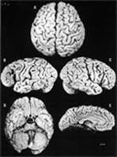
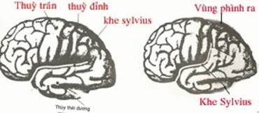

Sau khi cha đẻ của thuyết tương đối qua đời, não của ông được bảo quản và chia thành 240 khối nhỏ. Tìm hiểu những bí ẩn của trí thông minh nơi con người xuất chúng này, một số nhà nghiên cứu đã có những khám phá bất ngờ.
Vào một ngày mùa xuân năm 1955, tang lễ của Albert Einstein diễn ra lặng lẽ, chỉ một số ít người thân dự lễ. Trong tiếng cầu kinh của vị chủ tễ, tro của Einstein được rắc vào không khí, nhờ gió mang đi. Thiên tài có bờm tóc trắng mất ngày 18/4/1955 do vỡ phình mạch, thọ 76 tuổi, để lại cho thế giới một phương trình một ẩn số: bí ẩn trí tuệ của ông. Não của ông là cơ quan duy nhất được bảo quản để giải đáp khát khao này của giới khoa học.
Thời ấy chưa có kỹ thuật ghi hình não, phương pháp phổ biến lúc đó là phẫu thích não của những nhân vật nổi tiếng vừa qua đời để khám phá những bí ẩn của nó. Người đã trích lấy não (mà không được phép) của Einstein là Thomas Harvey, bác sĩ bệnh lý học thuộc bệnh viện Princeton (Mỹ).
Não của Einstein nặng 1,230 kg, một trọng lượng trung bình, chứng tỏ trí thông minh không được tính bằng kilo. Kế đó, Harvey chụp một loạt ảnh (đen trắng), rồi cắt khối chất xám cô đặc đó thành 240 khối vuông nhỏ, mỗi khối 10 cm3, bảo quản trong formol, rồi bỏ bẵng gần 30 năm. Sự thể hẳn sẽ bị chôn vùi nếu không có nhà báo Steven Levy. Tay phóng viên trẻ kiên trì và bướng bỉnh ấy (sau trở thành tổng biên tập nhật báo lớn Newsweek) tìm ra dấu vết chiếc bình quý báu trên. Tin này gây xôn xao và bất bình trong cộng đồng khoa học, họ đòi Harvey phải giao lại di vật trí tuệ này, nhưng Harvey nhất quyết không nghe. Cho đến năm 1985, ông mới chấp nhận cho một nhóm nghiên cứu thuộc Đại học Berkeley và Alabama được ngắm qua một lát. Thời gian ngắn ngủi ấy đủ để nhóm phát hiện sự to quá mức của các tế bào có nhiệm vụ nuôi dưỡng tế bào thần kinh. Có lẽ nhờ vậy mà cha đẻ của thuyết tương đối mới có thể bắt các tế bào thần kinh hoạt động cật lực. Phần não còn lại không có gì đặc sắc.
Chuyện sẽ dừng lại ở đây nếu Harvey không đổi ý mà khăng khăng giữ riêng của báu cho mình. Bước sang tuổi 80, Harvey rốt cuộc trao bộ não cho những người thành thạo. Nhờ vậy, vào năm 1999, Sandra Witalson và Debra Kigar, 2 chuyên gia thần kinh lỗi lạc thuộc đại học Halmiton (Canada) mới có thể chiêm ngưỡng khối hình ráp gồm 240 mảnh này trong phòng thí nghiệm và cả những bức ảnh đã 40 năm.

Não người bình thường (trái) và não Einstein.
Não bộ của 35 nam và 56 phụ nữ có sức khỏe tâm thần tốt đã được đem so sánh. Một sự bất thường đập ngay vào mắt các nhà nghiên cứu: khe Sylvius, một rãnh sâu phân ranh thùy thái dương và thùy trán, lại rất khác với khe của tất cả các não từng được nghiên cứu.
Vì vậy, Einstein có những thùy đỉnh rất rộng, mà các thùy này kiểm soát cảm giác không gian, nhờ đó chúng ta định được vị trí các vật thật hoặc tưởng tượng. Các thùy này cũng chứa những vùng chuyên về lập luận toán học và không gian trừu tượng, tức là những ưu điểm của Einstein.
Nhóm nghiên cứu còn nhận thấy một đặc điểm khác biệt khác nữa, đó là thùy đỉnh trái phát triển ngang với thùy đỉnh phải. Thường thì thùy đỉnh trái nhỏ hơn, vì bị nén bởi những vùng lân cận có chức năng về ngôn ngữ. Có thể đây là một cách giải thích cho sự kiện nhà vật lý học nổi tiếng biết nói muộn, khi đã lên 3. Einstein không có nắp đỉnh, một vùng kiểm soát các cử động tinh tế, khéo léo của bàn tay, dù vậy ông vẫn chơi violon trong suốt cuộc đời. "Đó hẳn là nhờ một hiện tượng bù đắp ở vỏ não", Marie Thérèse Perenin, chuyên viên thần kinh tâm lý thuộc Viện y tế và nghiên cứu y học quốc gia Pháp, nhận xét. Ý bà muốn nói não của chúng ta rất uyển chuyển, biết thích nghi với những công việc thuộc những vùng mới mà não chưa từng thực hiện trước đó.
Một bài học cơ thể được rút ra từ trường hợp của Albert Einstein: khi ta chờ đợi trông thấy một bộ não "kiểu mẫu" thì ta gặp một dị tật nghiêm trọng. Sự bất thường ấy không gây một trở ngại nào, ngược lại còn giúp đối tượng trở thành một trong những nhà bác học lỗi lạc trong lịch sử. Theo Olivier Robain, chuyên viên về dị tật não, "đây là một bằng chứng cho thấy giải phẫu học não chưa đủ để xác định năng lực trí tuệ. Nếu giờ đây một đứa trẻ ra đời có cùng dị tật, không có gì đảm bảo nó sẽ trở thành một thiên tài". Có những yếu tố khác can thiệp vào cuộc chơi, nhưng những yếu tố này bị chôn vùi mãi mãi trong hàng tỷ vùng tiếp xúc giữa hai tế bào thần kinh kích hoạt bộ não của Albert Einstein.
Kiến thức ngày nay (theo Science et Vie )